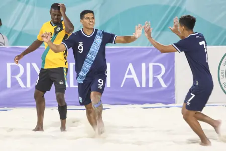
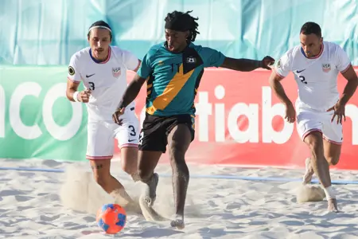

NOTICIAS
Portillo, Cerna y Julmis premiados en el Campeonato de Fútbol Playa de Concacaf 2025
El Salvador gana la final del Campeonato de Fútbol Playa 2025
EE.UU. obtiene el tercer puesto en el Campeonato de Fútbol Playa de Concacaf 2025

Guatemala clasifica a su primer Copa Mundial de Fútbol Playa
El Salvador derrota a Estados Unidos en penales y avanza a la Final y al Mundial
El Salvador derrota a Estados Unidos en penales y avanza a la Final y al Mundial
El Salvador y Guatemala se enfrentan en la Final del Campeonato de Beach Soccer

Bahamas y EE. UU. se enfrentan por el tercer puesto en el Campeonato de Fútbol Playa de la Concacaf
Bahamas y Guatemala por su primera final del Campeonato de Beach Soccer